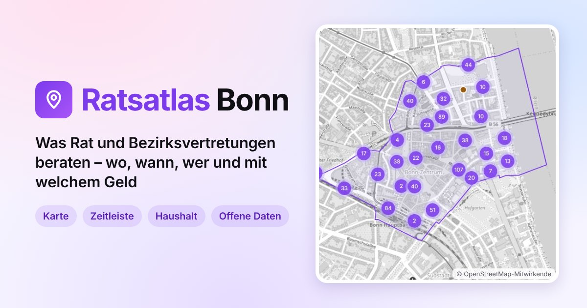

Der Ratsatlas erschließt öffentliche Vorlagen aus kommunalen Ratsinformationssystemen räumlich, zeitlich und nach beteiligten Gremien und Ämtern.
Jede Angabe ist auf ihre Quelle im Ratsinformationssystem rückführbar; abgeleitete Informationen sind gekennzeichnet.
Städte
-

Ratsatlas Bonn
Vorlagen aus dem Ratsinformationssystem der Stadt Bonn auf Karte und Zeitleiste
- Adresse
- bonn.ratsatlas.de
- Datenquelle
- OParl-Schnittstelle der Stadt Bonn
- Status
- Online
-
Ratsatlas Köln
Vorlagen aus dem Ratsinformationssystem der Stadt Köln auf Karte und Zeitleiste
- Adresse
- koeln.ratsatlas.de
- Datenquelle
- OParl-Schnittstelle der Stadt Köln
- Status
- In Vorbereitung